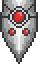
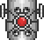

The Destroyer
| Drops | |
|---|---|
| Coins: | 12 |
| Item | Rate |
| | 100% |
| 5-15 | 100% |
| The Destroyer | |
|---|---|
| | |
| Statistics | |
| Type | Boss Burrowing Enemy |
| AI Type | The Destroyer AI |
- For strategies on how to defeat The Destroyer, see Guide:The Destroyer strategies.
The Destroyer is a Hardmode version of Eater of Worlds boss, which was introduced in the 1.1 patch. It is summoned using a Mechanical Worm. Unlike the Eater of Worlds, however, it can only be summoned at night, and it is not limited to the Corruption.
The Destroyer has a metallic-like body unlike Eater of Worlds which has a corrupted worm body. The Destroyer has red lights in its body, which are Probes that the Destroyer sends out. They are capable of firing lasers both from inside the Destroyer and detached from their master. If the light isn't lit up, that means Probe was already launched from that segment.
The Destroyer is a much different type of worm to fight unlike the others. His total health is shared throughout all segments of the body, not just one. The Destroyer also doesn't split like Eater of Worlds does (breaking into more segments of itself to fight the player), which means it will completely die when its health reaches zero.
Due to its massive health, it seems almost impossible to kill the Destroyer without end-game weapons and/or multiple players. However with end-game weapons, the Destroyer is the easiest Hardmode boss to beat solo due to the fact that it doesn't move out of the range of the player, allowing you to use high DPS melee weapons such as Excalibur or the Dao of Pow.
When the Destroyer's health is low, it is recommended to wait until its head is near or within sight of the player before killing it due to his drops coming out of its head. This means that the drops may possibly be lost somewhere underground or high in the sky, and considering that the Souls of Might are not subject to gravity (just like the other souls), it may be difficult to find them if the players cannot keep track of his body links.
Segments
| The Destroyer Tail | |
|---|---|
|  | |
| Statistics | |
| Damage | 20 |
| Max Life | 80000 (shared) |
| Defense | 35 |
| The Destroyer Body | |
|---|---|
|  | |
| Statistics | |
| Damage | 22 death laser 40 melee |
| Max Life | 80000 (shared) |
| Defense | 30 |
| The Destroyer Head | |
|---|---|
| | |
| Statistics | |
| Damage | 60 |
| Max Life | 80000 (shared) |
| Defense | 0 |
Notes
- The picture of the Destroyer is just a small preview; the actual boss is extremely (estimated 150+ blocks) long.
- The Destroyer may be fought outside The Corruption, but only at night. It disappears if you haven't killed it by morning.
- The Destroyer appears to be robotic along with Skeletron Prime and The Twins in their 2nd form.
- Casting-oriented armor sets using the Demon Scythe can dish out quite respectable amounts of damage to the Destroyer, as the Destroyer is so large that multiple hits per scythe are all but guaranteed.
- Ranged-oriented armor sets should consider using penetrating ammo such as Meteor Shot with the Phoenix Blaster, Clockwork Assault Rifle or Shotgun. Crystal Bullets may also be an option. The Minishark is not recommended due to its low base damage. The Megashark has a very high damage rate and can be used once The Destroyer is defeated, as it drops multiple Souls of Might, required to create the weapon.
- If The Twins are already defeated and the player has access to the Magical Harp, it can make quick work of the destroyer as the shots hit infinitely, fly slowly and do high damage.
- Under no circumstances should the Destroyer be fought in an open area, as this will lead to The Destroyer firing an extremely large barrage of lasers. It is ideal to construct a large enclosed space with some walls inside to jump over, as the lasers are blocked by solid obstacles.
- Of all the new bosses, The Destroyer is the easiest for dedicated melee-users to kill. Since each swing of a sword or stab of a spear can hit multiple parts of the body, you can often rack up damage on the boss just as easily as using the Megashark without resorting to using bullets. With a full set of Adamantite armor, you should be able to run through the body of The Destroyer and not take too much damage should you need to kill a Probe. However, make sure to avoid the mouth since it does a large amount of damage even when you are wearing the best armor.
- Due to his large size boulders can pack quite a punch against him.
- The Destroyer has unique music that plays when you fight it.
History
- 1.1: Introduced.
| Bosses |
|---|
| King Slime Eye of Cthulhu Eater of Worlds Skeletron Wall of Flesh The Twins The Destroyer Skeletron Prime |
| Worms |
|---|
| Bone Serpent Digger Devourer Giant Worm Leech World Feeder Wyvern Eater of Worlds The Destroyer |